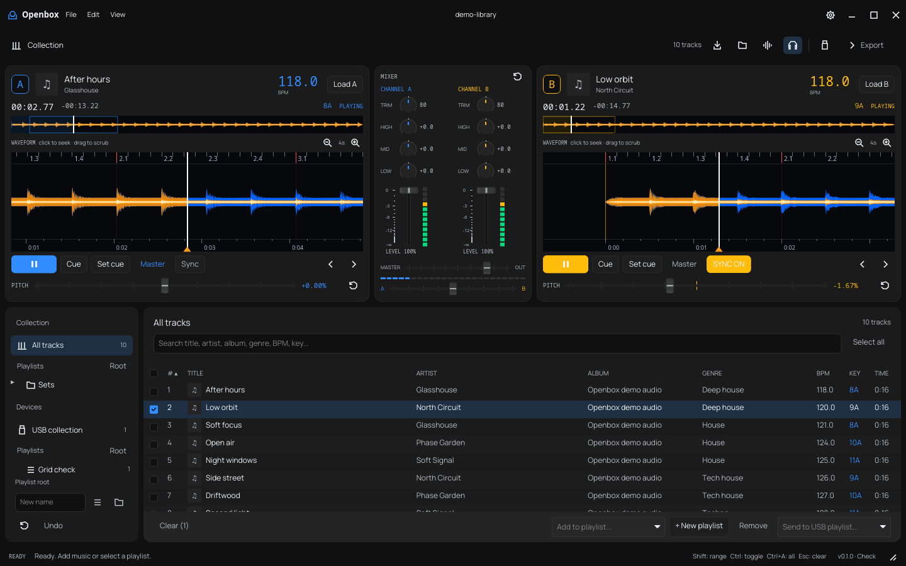
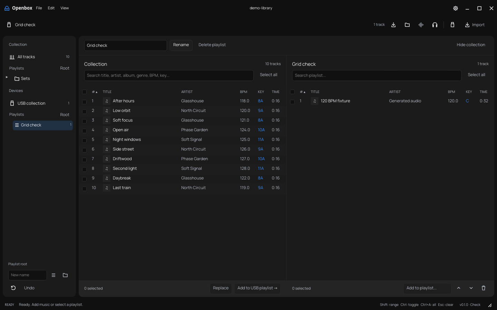

Linux
AppImage · x86_64 · Ubuntu 24.04 or newer
View releasesPrepare your music library, preview a mix and manage DJ USBs.

Import tracks, organise playlist folders and edit selections in batches.
Import, export and update playlists on Device Library and OneLibrary USBs.
Two decks with beat sync, channel EQ and faders. BPM, key, beatgrids and cover artwork.

Release downloads
AppImage · x86_64 · Ubuntu 24.04 or newer
View releasesWindows 10 / 11 · x86_64
View releasesApple silicon and Intel
FFmpeg and ffprobe are required. Installation instructions
Exports include Device Library and OneLibrary databases, MP3 audio, artwork, beatgrids and DAT/EXT/2EX waveforms. USB playlist visibility has been confirmed on an XDJ-1000. Full playback, waveform alignment and quantization still need hardware validation.